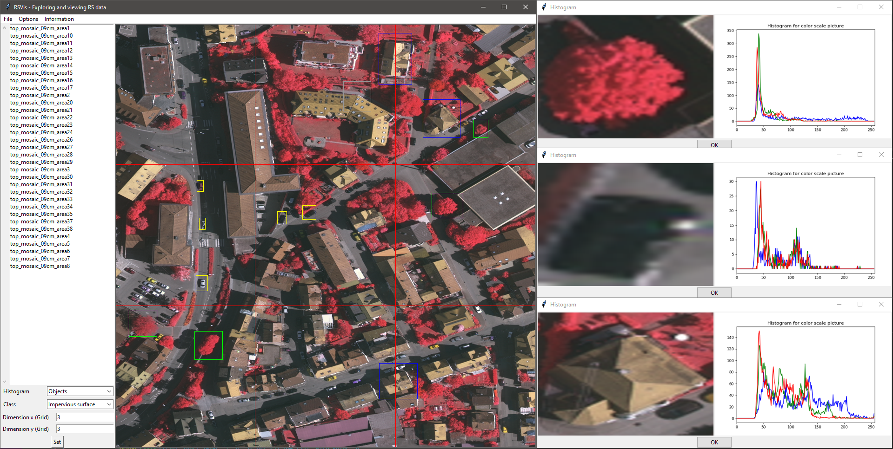

RSVis is a visualization tool for exploring and for viewing remote sensing data.
The source code can be found under the following link.
Python 3.x
Git (optional)
CloudCompare (optional)
If git is installed on your personal computer, start a virtual environment in python and run the following installation command
pip install -e git+http://github.com/wbrandenburger/DataVisualization.git#egg=rsvis
Otherwise, download the source code of the repository to an arbitrary path and install the package via
pip install -e git+file:///path/to/your/git/repo#egg=rsvis
or
python path/to/your/git/repo/setup.py install develop
Start the virtual environment in python where the data visualization package is located and navigate to the main folder with the dataset of the lecture and run the following command
rsvis run "lecture.yaml" --task_set tasks --task lecture
The field path_dir of key param_io in lecture.yaml has to point to an existing path, where displayed images can be saved. The other parameter of the key are not relevant for the user. If images have to be saved under Windows in folder C:\User\Username\RSVis the key param_io might be defined as follows:
param_io:
path_dir: C:\User\Username\RSVis
path_name: '{}'
regex:
- .*
- 0
ext: .tif
The field path_dir of key param_io in lecture.yaml has to point to an existing path, where displayed images can be saved. The other parameter of the key are not relevant for the user. If images have to be saved under Windows in folder C:\User\Username\RSVis the key param_io might be defined as follows:
param_io:
path_dir: C:\User\Username\RSVis
path_name: '{}'
regex:
- .*
- 0
ext: .tif
If the use of CloudCompare is desired, the field cloud_viewer and cloud_editor of key param_cloud have to point to the executables of ccViewer and CloudCompare, for example:
param_cloud:
cloud_viewer: "C:\Program Files\ccViewer\ccViewer.exe",
cloud_editor: "C:\Program Files\CloudCompare\CloudCompare.exe",
Since, the use of CloudCompare is not activated by default, the command to execute RSVis changes to:
rsvis run "lecture.yaml" --task_set tasks --task rsshow

The Vaihingen data set was provided by the German Society for Photogrammetry, Remote Sensing and Geoinformation (DGPF) Cramer, 2010
[1]: Cramer, M., 2010. The DGPF test on digital aerial camera evaluation – overview and test design. Photogrammetrie – Fernerkundung – Geoinformation 2(2010): 73-82.